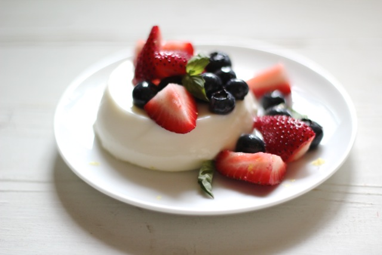

Home >
Keto Panna Cotta

Description
This keto panna cotta is a low carb and sugar free twist on the classic Italian dessert!
5 simple ingredients and ready in just 5 minutes, it's an elegant keto dessert! 2 grams net carbs per serving.
Prep time: 5 min
Cook time: 5 min
Serves 8 people
Ingredients
- 1 tablespoon gelatin powder
- 2 tablespoon cold water
- 2 cups heavy cream
- 1 cup milk of choice
- 1/3 cup granulated sweetener of choice
- 2 teaspoon vanilla extract
Steps
- Lightly grease eight 1/2 cup or four 1 cup ramekins and set aside. In a small bowl, whisk together your gelatin
with cold water. Let it sit to thicken.
- In a saucepan, add the rest of your ingredients. On medium heat, while stirring regularly, bring to a boil. Once
it begins to boil, reduce it to very low and let it simmer for several minutes, before removing from the heat.
- Add the gelatine mixture into the saucepan and whisk very well, until combined and smooth. Distribute the panna
cotta mixture amongst the ramekins and allow to cool to room temperature. Once cool, place them in the
refrigerator for at least 4 hours, or overnight.
- After the panna cotta has firmed up, remove the panna cotta from the refrigerator. Using a slightly wet knife,
run it around the sides of the ramekin for easy removal. Turn the ramekins upside down onto a plate and serve.